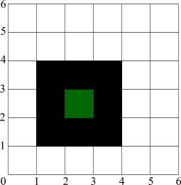
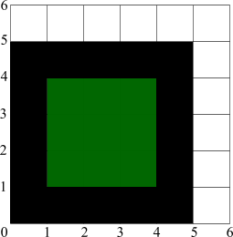

| Home/ |
| Tips & Tricks/ |
|
|
|
|
The Problem of Line Alignment |
Let us start with a simple rectangle. |
Here we have a rectangle with exact integral coordinates (1,1,4,4).
Everything looks fine, but to understand and see how the |
The pixels have intensities proportional to the area of the pixel covered by the rectangle. In practice it means that the rectangle looks blur. It's not a caprice, it's a necessity because only in this case we can preserve the visual area covered by the rectangle the same, regardless of its subpixel position. The initial rectangle covers 9 pixels. If we just round off the coordinates, the resulting rectangle can be drawn as 4 pixels and it can be drawn as 16 pixels, depending on the position and the rounding rules. So that, the “blurness” is much less evil than "jitter" because it allows you to keep the image much more consistent. |
Now let's try to calculate an outline of one pixel width around this square: |
This is an ideal case. In prcatice we cannot draw anything between pixels, so the result will look even more blur: |
There are no fully covered pixels at all and this fact creates the problem of line alignment. Bad news is that there's no ideal solution of it, we'll have to sacrifice something. The good news is there are several partial solutions that can be satisfactory. First, let's try to add 0.5 to the coordinates of the outline. Remember, if we add 0.5 to the filled rectangle too, the ones without outlines will look blur (see above). |
Looks perfect while the outline is 100% opaque. If we have a translucent boundary it will look worse: |
The translucency can be implicit, for example, if we draw a line of 0.5 pixel width, it's simulated with translucency! It will look better if we shift both, the fill and its outline. |
But remember, it will look worse if it's not outlined. Still, The first solution is to shift everything to 0.5 pixel, which can be appropriate when you have outlines in all cases. |
The second solution is to shift only outlines, keeping the filled polygons as they are. In this case you must be sure you always have the outline of at least 1 pixel width. That's not a good restriction. You can do even better, shifting only those polygons that have an outline (stroke). But in this case you can have some inconsistency between polygons with and without strokes. |
The shifting transformer is very simple: |
namespace agg { class trans_shift { public: trans_shift() : m_shift(0.0) {} trans_shift(double s) : m_shift(s) {} void shift(double s) { m_shift = s; } double shift() const { return m_shift; } void transform(double* x, double* y) const { *x += m_shift; *y += m_shift; } private: double m_shift; }; } |
And its use is simple too: |
agg::trans_shift ts(0.5); agg::conv_transform<source_class, agg::trans_shift> shift(source, ts); |
That is, it's included into the pipeline as yet another transformer. If you use the affine transformer (most probably you will), you can do without this additional converter. Just add the following, after the matrix is formed: |
mtx *= agg::trans_affine_translate(0.5, 0.5); |
In this case there will be no additional “performance fee”. Of course, you will have to worry about when and where to add this shift (see cases above). |
There is one more solution and it can be even better. Nobody says that we need to apply the same shift to all coordinates. In case of our rectangle there can be inner or outer outline: |
  |
You can achive this with using conv_contour, see also Demo conv_contour.cpp. |
But there are some problems too. First of all, the “insideness” becomes important, while conv_stroke doesn't care about it. So that, you should preserve or detect the orientation of the contours, not to mention that self-intersecting polygons don't have a univocal orientation, they can have only a “prevaling” orientation. |
The second problem is where to apply this transformation. It should be definitely done before stroke converter. But there is a contradiction with the succeeding affine transformations. Take the zoom operation, for example. If you want the line widths to be consistent with the transformations, you have to use the affine transformer after the outline is calculated. If it's done before, you can change the stroke width respectively, but in this case you breake the integrity if you have different scaling coefficients by X and Y. |
If you are absolutely sure you will never use different scaling coefficients by X and Y, you can transform paths before calculating the outline. In other words, the sequence of the conversions is important and it can be contadictive. Besides, you have to decide if you only need to correct the “0.5 problem” or to have the true inner or outer stroke. |
The conclusion is that there's no ideal solution. But the whole
idea of |